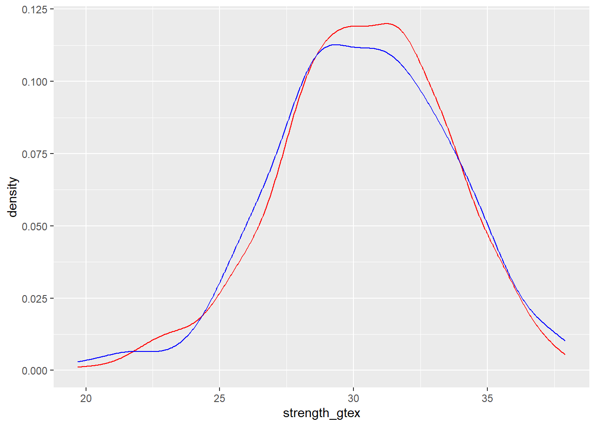
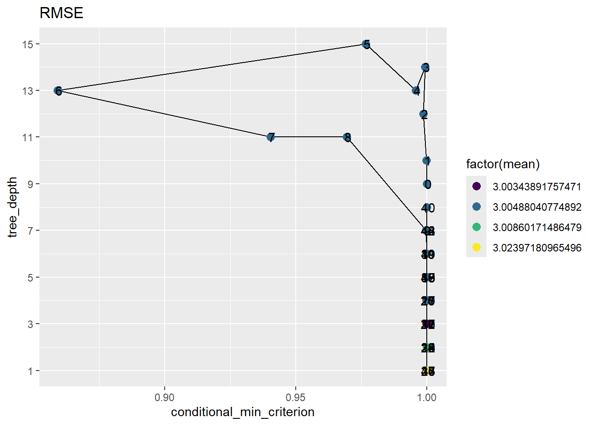
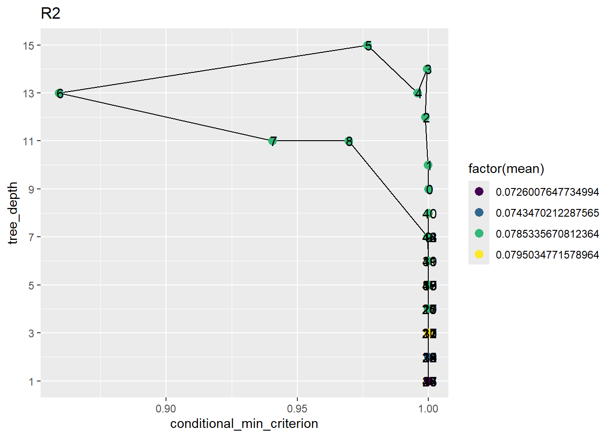
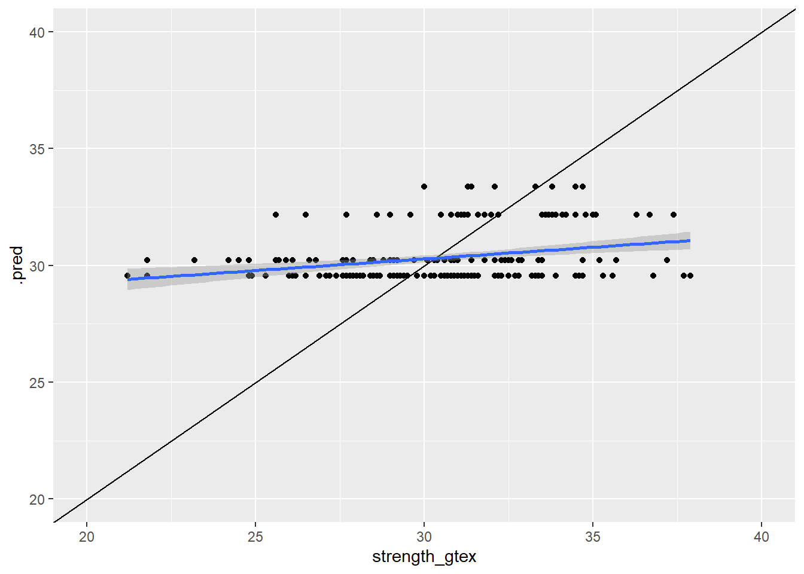
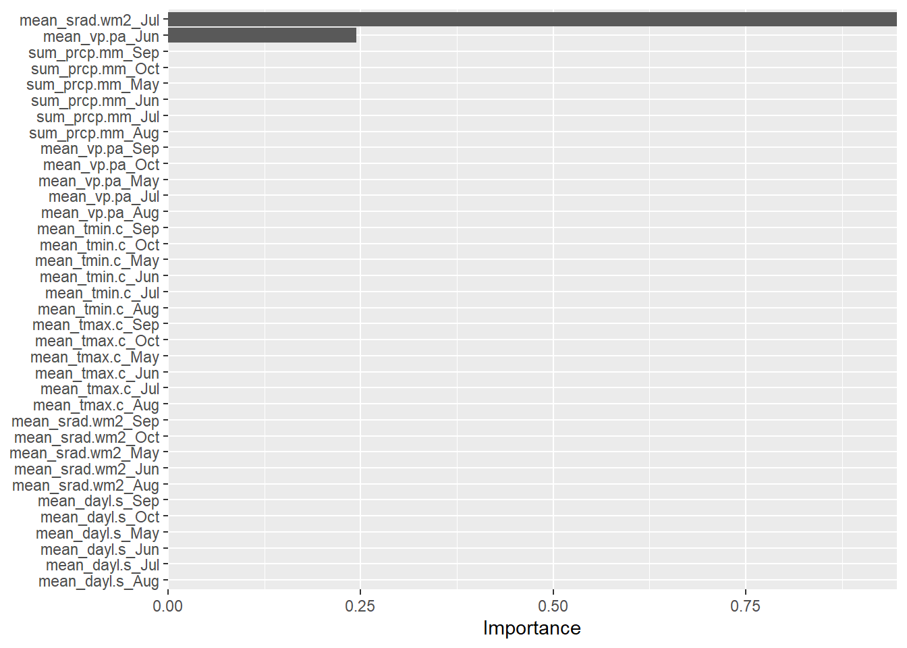
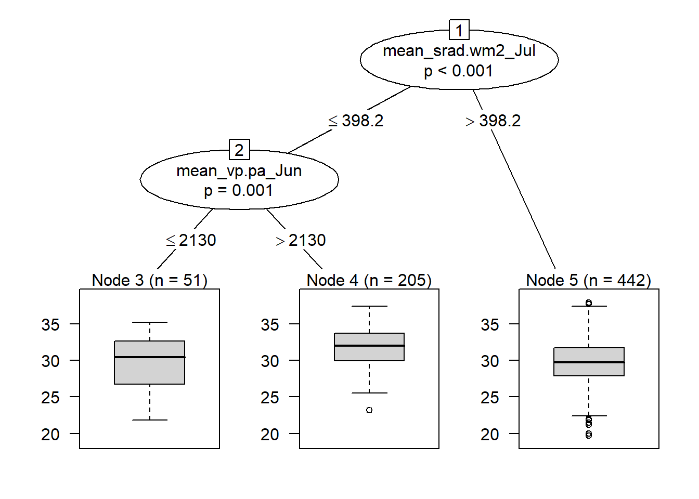

#install.packages("partykit")
#install.packages("finetune")
#install.packages("bonsai")
#install.packages("tidymodels")
#install.packages("vip")
library(tidymodels)
library(tidyverse)
library(vip)
library(partykit)
library(finetune)
library(bonsai)Conditional inference tree
Learning objectives
Our learning objectives are to:
- Understand conditional inference tree (cit) algorithm - Use the ML framework to:
- pre-process data - train a cit model - evaluate model predictability - Explore a few new concepts:
- Iterative search with simulated annealing
- Selecting best model within 1 sd
Introduction
As we previously learned, linear regression models can suffer from multicollinearity when two or more predictor variables are highly correlated.
The methods we mentioned to overcome multicollinearity include:
- Dimensionality reduction (e.g., PCA)
- Variable selection: - by hand - by models
Today, we’ll explore another model that performs variable selection, but in a different way: conditional inference trees (CIT).
CIT
Conditional inference tree is a recursive model that works iteratively performing 2 steps:
- variable selection
- binary split
It performs variable selection by first running all possible bivariate models between the response variable (e.g., strength_gtex) and each individual explanatory variable (e.g., sum_precip.mm_June), in the form of strength_gtex ~ sum_precip.mm_June. Then, it selects the explanatory variable with the lowest p-value as the most important.
After it selects the most important variable, it performs a binary split on that variable, which involves finding a value of the explanatory variable which, if used to split the data in 2 groups, will minimize the error of the two splits.
After making the first split, it performs a new iteration on each of the splits, performing again variable selection and binary split.
The tree stops growing (stops iterating) when it reaches a given stopping criteria, as for example, maximum tree depth.
Let’s look into how it works, with figures.
 Terminology:
Terminology:
- Root node: node on top, with all observations (Rain_Cum)
- Internal node: all intermediate nodes (e.g., Flag_Leaf_Fungi)
- Leaf/terminal node: the bottom nodes with the boxplots
scientist with engineering this platforms can creat new specificity
Variables selected first (on top) are more important than variables selected afterwards. In this example, the most important variable in explaining grain yield is Rain_Cum.
Creating partitions
Let’s look into a simpler example where we are predicting y as a function of x.
A simple CIT model from this relationship would be with a single break:

If we make a plot of y ~ x and show the split above along the x axis, this is how it would look like:

We can build a more complex tree by allowing it to be deeper:

Which will translate into more breaks along the x-axis of the scatterplot:

We can allow it to be VERY complex:

With the following scatterplot breakpoints:

So, how can we control the simplicity/complexity of the tree?
Training a model by fine-tuning its hyper-parameters.
There will be 2 main hyperparameters that we will fine-tune:
- maximum depth: maximum (vertical) depth of the tree - minimum criterion: the value of (1 - p-value) that must be exceeded in order to implement a split
Pros vs. cons of CIT
Pros:
- Non-parametric
- It can model non-linear relationships
- The model created is a decision tree, very easy to interpret
- Can be used with both numerical and categorical response variables
Cons:
- Can have higher bias
- Potentially lower predictive power: any observation matching a given condition will be predicted as the mean of the terminal node.
Setup
weather <- read_csv("../data/weather_monthsum.csv")Rows: 698 Columns: 75
── Column specification ────────────────────────────────────────────────────────
Delimiter: ","
chr (1): site
dbl (74): year, strength_gtex, mean_dayl.s_Jan, mean_srad.wm2_Jan, mean_tmax...
ℹ Use `spec()` to retrieve the full column specification for this data.
ℹ Specify the column types or set `show_col_types = FALSE` to quiet this message.weather# A tibble: 698 × 75
year site strength_gtex mean_dayl.s_Jan mean_srad.wm2_Jan mean_tmax.c_Jan
<dbl> <chr> <dbl> <dbl> <dbl> <dbl>
1 1980 Altus,… 25.3 35873. 242. 10.2
2 1980 Ames P… 27.2 35743. 215. 9.2
3 1980 Artesi… 26 36359 279. 13.4
4 1980 Auburn… 24.8 36420. 240. 13.9
5 1980 Beevil… 24.5 37494. 277 19.9
6 1980 Belle … 28.1 35873. 224. 9.7
7 1980 Bossie… 25.9 36451. 221. 13.2
8 1980 Chicka… 25.9 35760. 244 9.5
9 1980 Clarkd… 26.1 35678. 265. 5.8
10 1980 Colleg… 27.1 36941. 254 15.8
# ℹ 688 more rows
# ℹ 69 more variables: mean_tmin.c_Jan <dbl>, mean_vp.pa_Jan <dbl>,
# sum_prcp.mm_Jan <dbl>, mean_dayl.s_Feb <dbl>, mean_srad.wm2_Feb <dbl>,
# mean_tmax.c_Feb <dbl>, mean_tmin.c_Feb <dbl>, mean_vp.pa_Feb <dbl>,
# sum_prcp.mm_Feb <dbl>, mean_dayl.s_Mar <dbl>, mean_srad.wm2_Mar <dbl>,
# mean_tmax.c_Mar <dbl>, mean_tmin.c_Mar <dbl>, mean_vp.pa_Mar <dbl>,
# sum_prcp.mm_Mar <dbl>, mean_dayl.s_Apr <dbl>, mean_srad.wm2_Apr <dbl>, …ML workflow
We’re going to use the same workflow as we used for elastic net.
1. Pre-processing
Here’s where we perform data split and data processing.
a. Data split
For data split, let’s use 70% training / 30% testing.
# Setting seed to get reproducible results
set.seed(931735)
# Setting split level
weather_split <- initial_split(weather,
prop = .7,
strata = strength_gtex)
weather_split<Training/Testing/Total>
<487/211/698># Setting train set
weather_train <- training(weather_split)
weather_train# A tibble: 487 × 75
year site strength_gtex mean_dayl.s_Jan mean_srad.wm2_Jan mean_tmax.c_Jan
<dbl> <chr> <dbl> <dbl> <dbl> <dbl>
1 1980 Altus,… 25.3 35873. 242. 10.2
2 1980 Ames P… 27.2 35743. 215. 9.2
3 1980 Artesi… 26 36359 279. 13.4
4 1980 Belle … 28.1 35873. 224. 9.7
5 1980 Bossie… 25.9 36451. 221. 13.2
6 1980 Chicka… 25.9 35760. 244 9.5
7 1980 Clarkd… 26.1 35678. 265. 5.8
8 1980 Colleg… 27.1 36941. 254 15.8
9 1980 Lamesa… 26.9 36390. 272. 12.5
10 1980 Mangum… 26.8 35808. 245. 9.6
# ℹ 477 more rows
# ℹ 69 more variables: mean_tmin.c_Jan <dbl>, mean_vp.pa_Jan <dbl>,
# sum_prcp.mm_Jan <dbl>, mean_dayl.s_Feb <dbl>, mean_srad.wm2_Feb <dbl>,
# mean_tmax.c_Feb <dbl>, mean_tmin.c_Feb <dbl>, mean_vp.pa_Feb <dbl>,
# sum_prcp.mm_Feb <dbl>, mean_dayl.s_Mar <dbl>, mean_srad.wm2_Mar <dbl>,
# mean_tmax.c_Mar <dbl>, mean_tmin.c_Mar <dbl>, mean_vp.pa_Mar <dbl>,
# sum_prcp.mm_Mar <dbl>, mean_dayl.s_Apr <dbl>, mean_srad.wm2_Apr <dbl>, …How many observations?
# Setting test split
weather_test <- testing(weather_split)
weather_test# A tibble: 211 × 75
year site strength_gtex mean_dayl.s_Jan mean_srad.wm2_Jan mean_tmax.c_Jan
<dbl> <chr> <dbl> <dbl> <dbl> <dbl>
1 1980 Auburn… 24.8 36420. 240. 13.9
2 1980 Beevil… 24.5 37494. 277 19.9
3 1980 Coolid… 32.1 36328. 268. 19.8
4 1980 Floren… 26.1 36000. 228. 12.3
5 1980 Jackso… 28.5 35596. 209. 8.7
6 1980 Marico… 24.8 36298. 275. 19.6
7 1981 Bossie… 27.6 36451. 266. 13.4
8 1981 Chilli… 26.1 35984. 274. 13.5
9 1981 Floren… 27.9 36000. 269. 10.5
10 1981 Halfwa… 26.2 36000. 290. 12.4
# ℹ 201 more rows
# ℹ 69 more variables: mean_tmin.c_Jan <dbl>, mean_vp.pa_Jan <dbl>,
# sum_prcp.mm_Jan <dbl>, mean_dayl.s_Feb <dbl>, mean_srad.wm2_Feb <dbl>,
# mean_tmax.c_Feb <dbl>, mean_tmin.c_Feb <dbl>, mean_vp.pa_Feb <dbl>,
# sum_prcp.mm_Feb <dbl>, mean_dayl.s_Mar <dbl>, mean_srad.wm2_Mar <dbl>,
# mean_tmax.c_Mar <dbl>, mean_tmin.c_Mar <dbl>, mean_vp.pa_Mar <dbl>,
# sum_prcp.mm_Mar <dbl>, mean_dayl.s_Apr <dbl>, mean_srad.wm2_Apr <dbl>, …How many observations?
Let’s check the distribution of our predicted variable strength_gtex across training and testing:
ggplot() +
geom_density(data = weather_train,
aes(x = strength_gtex),
color = "red") +
geom_density(data = weather_test,
aes(x = strength_gtex),
color = "blue") 
Now, we put our test set aside and continue with our train set for training.
b. Data processing
Before training, we may need to perform some processing steps, like
- normalizing
- removing unimportant variables
- dropping NAs
- performing PCA on the go
- removing columns with single value
- others?
For that, we’ll create a recipe of these processing steps.
This recipe will then be applied now to the train data, and easily applied to the test data when we bring it back at the end.
Creating a recipe is as easy way to port your processing steps for other data sets without needing to repeat code, and also only considering the data it is being applied to.
You can find all available recipe step options here: https://tidymodels.github.io/recipes/reference/index.html
Different model types require different processing steps.
Let’s check what steps are required for an elastic net model (linear_reg). We can search for that in this link: https://www.tmwr.org/pre-proc-table
Differently from elastic net, variables do not need to be normalized in conditional inference tree, so we’ll skip this step
weather_recipe <-
# Defining predicted and predictor variables
recipe(strength_gtex ~ .,
data = weather_train) %>%
# Removing year and site
step_rm(year, site, matches("Jan|Feb|Mar|Apr|Nov|Dec")) #%>%
# Normalizing all numeric variables except predicted variable
#step_normalize(all_numeric(), -all_outcomes())
weather_recipe── Recipe ──────────────────────────────────────────────────────────────────────── Inputs Number of variables by roleoutcome: 1
predictor: 74── Operations • Variables removed: year, site, matches("Jan|Feb|Mar|Apr|Nov|Dec")Now that we have our recipe ready, we need to apply it to the training data in a process called prepping:
weather_prep <- weather_recipe %>%
prep()
weather_prep── Recipe ──────────────────────────────────────────────────────────────────────── Inputs Number of variables by roleoutcome: 1
predictor: 74── Training information Training data contained 487 data points and no incomplete rows.── Operations • Variables removed: year, site, mean_dayl.s_Jan, ... | TrainedNow, we’re ready to start the model training process!
2. Training
a. Model specification
First, let’s specify:
- the type of model we want to train
- which engine we want to use
- which mode we want to use
Elastic nets can only be run for a numerical response variable. CITs can be run with either numerical (regression) or categorical (classification) explanatory variable. Therefore, we have the need to specify the mode here.
Conditional inference tree hyperparameters:
- tree_depth: maximum depth of the tree
- mincriterion: the value of 1 - p-value that must be exceeded in order to implement a split
- min_n: minimum number of data points in a node that are required for the node to be split further
Let’s create a model specification that will fine-tune the first two for us.
A given model type can be fit with different engines (e.g., through different packages). Here, we’ll use the partykit engine/package.
cit_spec =
# Specifying cit as our model type, asking to tune the hyperparameters
decision_tree(tree_depth = tune()) %>%
# Specify the engine
set_engine("partykit",
conditional_min_criterion = tune()
) %>%
# Specifying mode
set_mode("regression")
cit_specDecision Tree Model Specification (regression)
Main Arguments:
tree_depth = tune()
Engine-Specific Arguments:
conditional_min_criterion = tune()
Computational engine: partykit Notice how the main arguments above do not have a value yet, because they will be tuned.
Notice how we have one hyperparameter at the level of decision tree (tree_depth) and another one at the level of the engine (min_criterion).
b. Hyper-parameter tuning
On our previous exercise, we used a fixed grid search approach. This time, let’s use an iterative search approach.
For our iterative search, we need:
- Our model specification (cit_spec)
- The recipe (weather_recipe)
- Our resampling strategy (don’t have yet)
- Parameter information (don’t have yet)
Let’s define our resampling strategy below, using a 10-fold cross validation approach:
set.seed(34549)
resampling_foldcv <- vfold_cv(weather_train,
v = 10)
resampling_foldcv# 10-fold cross-validation
# A tibble: 10 × 2
splits id
<list> <chr>
1 <split [438/49]> Fold01
2 <split [438/49]> Fold02
3 <split [438/49]> Fold03
4 <split [438/49]> Fold04
5 <split [438/49]> Fold05
6 <split [438/49]> Fold06
7 <split [438/49]> Fold07
8 <split [439/48]> Fold08
9 <split [439/48]> Fold09
10 <split [439/48]> Fold10resampling_foldcv$splits[[1]]<Analysis/Assess/Total>
<438/49/487>resampling_foldcv$splits[[2]]<Analysis/Assess/Total>
<438/49/487>On each fold, we’ll use 438 observations for training and 49 observations to assess performance.
Now, let’s define our parameter information.
We need to create this object because engine-specific hyperparameters have a missing object, and it is required to be not missing to perform simulated annealing.
cit_param = cit_spec %>%
extract_parameter_set_dials() %>%
update(conditional_min_criterion = conditional_min_criterion())
cit_paramCollection of 2 parameters for tuning identifier type object
tree_depth tree_depth nparam[+]
conditional_min_criterion conditional_min_criterion nparam[+]cit_param$object[[1]]Tree Depth (quantitative)Range: [1, 15]
[[2]]Value Needed for Split (quantitative)Transformer: prob-logis [0, 1]Range (transformed scale): [1.39, 15]Now, let’s perform the search below.
We will use an iterative search algorithm called simulated annealing.
Here’s how it works:
 - In the example above, mixture and penalty from an elastic net model are being tuned.
- In the example above, mixture and penalty from an elastic net model are being tuned.
It finds a candidate value of hyperparameters and their associated rmse to start (iteration 1).
It establishes a radius around the first proposal, and randomly chooses a new set of values within that radius.
If this achieves better results than the previous parameters, it is accepted as the new best and the process continues. If the results are worse than the previous value the search procedure may still use this parameter to define further steps.
After a given number of iterations, the algorithm stops and provides a list of the best models and their hyperparameters.
In the algorithm below, we are asking for 50 iterations.
set.seed(76544)
cit_grid_result <- tune_sim_anneal(
object = cit_spec,
preprocessor = weather_recipe,
resamples = resampling_foldcv,
param_info = cit_param,
iter = 50
)Optimizing rmseInitial best: 3.004901 ◯ accept suboptimal rmse=3.0049 (+/-0.133)2 ◯ accept suboptimal rmse=3.0049 (+/-0.133)3 ◯ accept suboptimal rmse=3.0049 (+/-0.133)4 ◯ accept suboptimal rmse=3.0049 (+/-0.133)5 ◯ accept suboptimal rmse=3.0049 (+/-0.133)6 ◯ accept suboptimal rmse=3.0049 (+/-0.133)7 ◯ accept suboptimal rmse=3.0049 (+/-0.133)8 ✖ restart from best rmse=3.0049 (+/-0.133)9 ◯ accept suboptimal rmse=3.0049 (+/-0.133)10 ◯ accept suboptimal rmse=3.0049 (+/-0.133)11 ◯ accept suboptimal rmse=3.0049 (+/-0.133)12 ─ discard suboptimal rmse=3.0086 (+/-0.1361)13 ♥ new best rmse=3.0034 (+/-0.1335)14 ─ discard suboptimal rmse=3.024 (+/-0.1437)15 ◯ accept suboptimal rmse=3.0049 (+/-0.133)16 ◯ accept suboptimal rmse=3.0049 (+/-0.133)17 + better suboptimal rmse=3.0034 (+/-0.1335)18 ◯ accept suboptimal rmse=3.0049 (+/-0.133)19 ◯ accept suboptimal rmse=3.0049 (+/-0.133)20 ◯ accept suboptimal rmse=3.0049 (+/-0.133)21 ✖ restart from best rmse=3.0034 (+/-0.1335)22 ◯ accept suboptimal rmse=3.0086 (+/-0.1361)23 ◯ accept suboptimal rmse=3.024 (+/-0.1437)24 + better suboptimal rmse=3.0086 (+/-0.1361)25 ◯ accept suboptimal rmse=3.0086 (+/-0.1361)26 + better suboptimal rmse=3.0049 (+/-0.133)27 ◯ accept suboptimal rmse=3.0049 (+/-0.133)28 ◯ accept suboptimal rmse=3.0086 (+/-0.1361)29 ✖ restart from best rmse=3.0086 (+/-0.1361)30 ◯ accept suboptimal rmse=3.0034 (+/-0.1335)31 ◯ accept suboptimal rmse=3.0034 (+/-0.1335)32 ◯ accept suboptimal rmse=3.0034 (+/-0.1335)33 ◯ accept suboptimal rmse=3.0086 (+/-0.1361)34 ◯ accept suboptimal rmse=3.0086 (+/-0.1361)35 ◯ accept suboptimal rmse=3.024 (+/-0.1437)36 + better suboptimal rmse=3.0086 (+/-0.1361)37 ✖ restart from best rmse=3.024 (+/-0.1437)38 ◯ accept suboptimal rmse=3.0049 (+/-0.133)39 ◯ accept suboptimal rmse=3.0049 (+/-0.133)40 ◯ accept suboptimal rmse=3.0049 (+/-0.133)41 ◯ accept suboptimal rmse=3.0049 (+/-0.133)42 ◯ accept suboptimal rmse=3.0049 (+/-0.133)43 ◯ accept suboptimal rmse=3.0049 (+/-0.133)44 ◯ accept suboptimal rmse=3.0049 (+/-0.133)45 ✖ restart from best rmse=3.0049 (+/-0.133)46 ─ discard suboptimal rmse=3.024 (+/-0.1437)47 ◯ accept suboptimal rmse=3.0049 (+/-0.133)48 ◯ accept suboptimal rmse=3.0049 (+/-0.133)49 ◯ accept suboptimal rmse=3.0049 (+/-0.133)50 ◯ accept suboptimal rmse=3.0049 (+/-0.133)cit_grid_result$.metrics[[2]]# A tibble: 2 × 6
tree_depth conditional_min_criterion .metric .estimator .estimate .config
<int> <dbl> <chr> <chr> <dbl> <chr>
1 9 1.00 rmse standard 3.42 initial_Pre…
2 9 1.00 rsq standard 0.0554 initial_Pre…Notice how we have a column for iterations.
The first iteration uses a sensible value for the hyper-parameters, and then starts “walking” the parameter space in the direction of greatest improvement.
Let’s collect a summary of metrics (across all folds, for each iteration), and plot them.
Firs, RMSE (lower is better):
cit_grid_result %>%
collect_metrics() %>%
filter(.metric == "rmse") %>%
ggplot(aes(x = conditional_min_criterion,
y = tree_depth
)) +
geom_path(group = 1) +
geom_point(aes(color = factor(mean)),
size = 3) +
scale_color_viridis_d() +
scale_y_continuous(breaks = seq(1,15,2)) +
geom_text(aes(label = .iter), nudge_x = .0005) +
labs(title = "RMSE")
What tree_depth and min criterion values created lowest RMSE?
Now, let’s look into R2 (higher is better):
cit_grid_result %>%
collect_metrics() %>%
filter(.metric == "rsq") %>%
ggplot(aes(x = conditional_min_criterion,
y = tree_depth
)) +
geom_path(group = 1) +
geom_point(aes(color = factor(mean)),
size = 3) +
scale_color_viridis_d() +
scale_y_continuous(breaks = seq(1,15,2)) +
geom_text(aes(label = .iter), nudge_x = .0005) +
labs(title = "R2")
Previously, we selected the single best model. Now, let’s select the best model within one std error of the metric, so we choose a model among the top ones that is more parsimonious.
# Based on lowest RMSE
best_rmse <- cit_grid_result %>%
select_by_one_std_err("tree_depth",
metic = "rmse")Warning in select_by_one_std_err(., "tree_depth", metic = "rmse"): No value of
`metric` was given; "rmse" will be used.best_rmse# A tibble: 1 × 3
tree_depth conditional_min_criterion .config
<int> <dbl> <chr>
1 9 1.00 initial_Preprocessor1_Model1# Based on greatest R2
best_r2 <- cit_grid_result %>%
select_by_one_std_err("tree_depth",
metic = "rsq")Warning in select_by_one_std_err(., "tree_depth", metic = "rsq"): No value of
`metric` was given; "rmse" will be used.best_r2# A tibble: 1 × 3
tree_depth conditional_min_criterion .config
<int> <dbl> <chr>
1 9 1.00 initial_Preprocessor1_Model1Based on RMSE, we would choose
- tree_depth = 9
- conditional_min_criterion = 0.999954
Based on R2, we would choose
- tree_depth = 9 - conditional_min_criterion = 0.999954
Let’s use the hyperparameter values that optimized R2 to fit our final model.
final_spec <- decision_tree(tree_depth = best_r2$tree_depth) %>%
# Specify the engine
set_engine("partykit",
conditional_min_criterion = best_r2$conditional_min_criterion) %>%
# Specifying mode
set_mode("regression")
final_specDecision Tree Model Specification (regression)
Main Arguments:
tree_depth = best_r2$tree_depth
Engine-Specific Arguments:
conditional_min_criterion = best_r2$conditional_min_criterion
Computational engine: partykit 3. Validation
Now that we determined our best model, let’s do our last fit.
This means 2 things:
- Traninig the optimum hyperparameter values on the entire training set
- Using it to predict on the test set
These 2 steps can be completed in one function, as below:
final_fit <- last_fit(final_spec,
weather_recipe,
split = weather_split)
final_fit %>%
collect_predictions()# A tibble: 211 × 5
.pred id .row strength_gtex .config
<dbl> <chr> <int> <dbl> <chr>
1 30.2 train/test split 4 24.8 Preprocessor1_Model1
2 30.2 train/test split 5 24.5 Preprocessor1_Model1
3 29.6 train/test split 11 32.1 Preprocessor1_Model1
4 30.2 train/test split 13 26.1 Preprocessor1_Model1
5 30.2 train/test split 14 28.5 Preprocessor1_Model1
6 29.6 train/test split 19 24.8 Preprocessor1_Model1
7 30.2 train/test split 32 27.6 Preprocessor1_Model1
8 29.6 train/test split 33 26.1 Preprocessor1_Model1
9 29.6 train/test split 37 27.9 Preprocessor1_Model1
10 29.6 train/test split 38 26.2 Preprocessor1_Model1
# ℹ 201 more rowsMetrics on the test set:
final_fit %>%
collect_metrics()# A tibble: 2 × 4
.metric .estimator .estimate .config
<chr> <chr> <dbl> <chr>
1 rmse standard 3.12 Preprocessor1_Model1
2 rsq standard 0.0814 Preprocessor1_Model1Metrics on train set (for curiosity and compare to test set):
# RMSE
final_spec %>%
fit(strength_gtex ~ .,
data = bake(weather_prep,
weather_train)) %>%
augment(new_data = bake(weather_prep,
weather_train)) %>%
rmse(strength_gtex, .pred) %>%
bind_rows(
# R2
final_spec %>%
fit(strength_gtex ~ .,
data = bake(weather_prep,
weather_train)) %>%
augment(new_data = bake(weather_prep,
weather_train)) %>%
rsq(strength_gtex, .pred)
)# A tibble: 2 × 3
.metric .estimator .estimate
<chr> <chr> <dbl>
1 rmse standard 2.86
2 rsq standard 0.149How does metrics on test compare to metrics on train?
Predicted vs. observed plot:
final_fit %>%
collect_predictions() %>%
ggplot(aes(x = strength_gtex,
y = .pred)) +
geom_point() +
geom_abline() +
geom_smooth(method = "lm") +
scale_x_continuous(limits = c(20, 40)) +
scale_y_continuous(limits = c(20, 40)) `geom_smooth()` using formula = 'y ~ x'Warning: Removed 1 row containing non-finite outside the scale range
(`stat_smooth()`).Warning: Removed 1 row containing missing values or values outside the scale range
(`geom_point()`).
Why the 4 horizontal lines?
How can we get more horizontal lines in this type of algorithm?
Variable importance:
final_spec %>%
fit(strength_gtex ~ .,
data = bake(weather_prep, weather)) %>%
vi() %>%
mutate(
Variable = fct_reorder(Variable,
Importance)
) %>%
ggplot(aes(x = Importance,
y = Variable)) +
geom_col() +
scale_x_continuous(expand = c(0, 0)) +
labs(y = NULL)
Tree:
final_spec %>%
fit(strength_gtex ~ .,
data = bake(weather_prep, weather)
) %>%
.$fit %>%
plot()
Therefore, solar radiation in July and vapor pressure in June were the most important variables affecting cotton fiber strength.
Greater fiber strength was observed when solar radiation in July was < 398 W/m2 and vapor pressure in June was > 2130 Pa (terminal node 4).
For a nicer tree visualization, check out the package ggparty:
- https://github.com/martin-borkovec/ggparty
- https://jtr13.github.io/cc19/introduction-to-package-ggparty.html
Summary
In this exercise, we covered: - Conditional inference tree algorithm
- Set up a ML workflow to train an cit model
- Used recipes to process data - Used rsamples to split data
- Used iterative search to find the best values for mas_depth and min_criterion
- Used 10-fold cross validation as the resampling method
- Used both R2 and RMSE as the metrics to select best model
- Once final model was determined, used it to predict test set
- Evaluated it with predicted vs. observed plot, R2 and RMSE metrics, variable importance, and tree plot